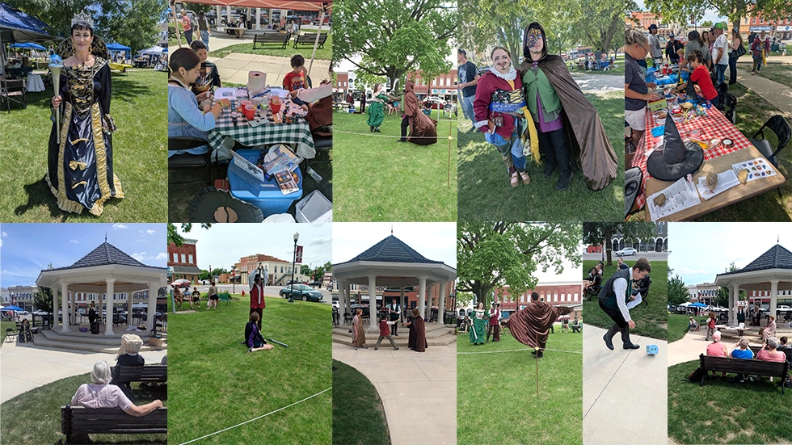

Bloomfield Renaissance Faire

The 2027 Bloomfield Renaissance Faire is July 24, at 1:00 PM
Countdown until the Faire:
About
The Bloomfield Renaissance Faire is an event filled with crafts, clothing, food, sports, and entertainment of the renaissance era. It's a place to make connections where one might not ordinarily make them. The community support is what makes the faire possible. This can be through donations, volunteering or simply participating in an activity. The more the community becomes involved, the bigger and better next year's ren faire will be.
The faire is hosted by The Bloomfield Renaissance Faire Committee, The Teen Advisory Board (TAB) and The Bloomfield Public Library.
Website To-Do
- Flag Red F Rt animation needs fixed
- Figure out what we're doing for CTA on home page
- remove unused fonts from website that I was testing and from css file.
- When we're happy with the fonts, remove font testing directory from site.
- At some point, decide on a soft launch date for a public release (1.0) version of the site.
- Big Day, Events: Do I just want images? animated gifs (webp) would be nice. However, source images might be hard to obtain especially if events don't get finalized until later.
- Color scheme
- images need to be .webp
- Make sure responsive layout looks okay on all widths (Desktop/Tablet/Mobile)
- prettify code
- If we move to w3.css and have to use custom code, use prefix "brf-"